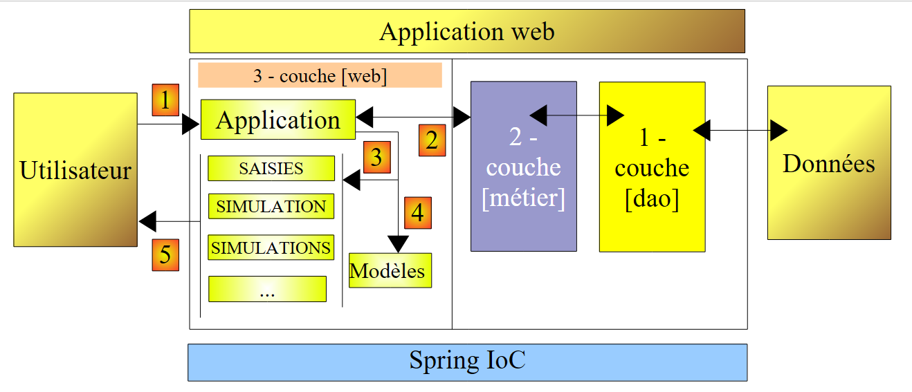
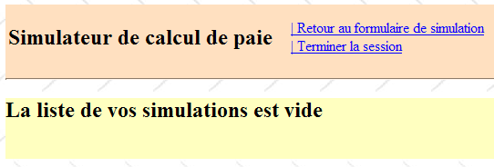
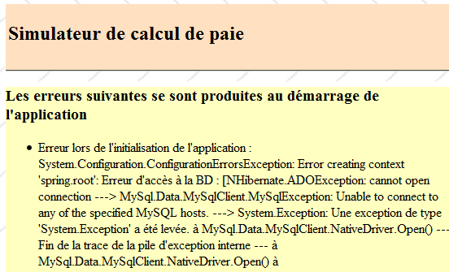
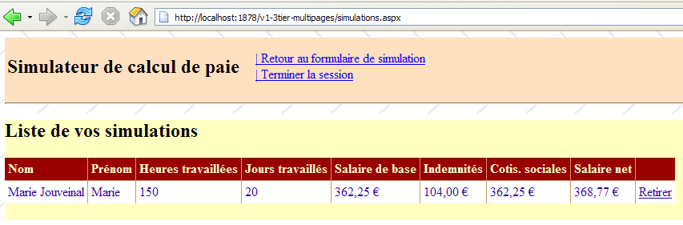
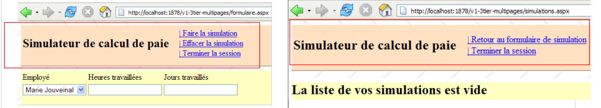
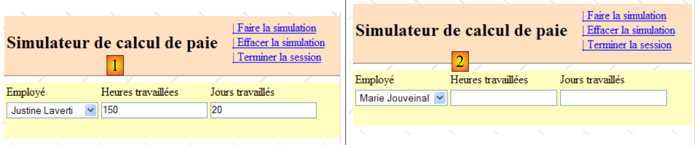
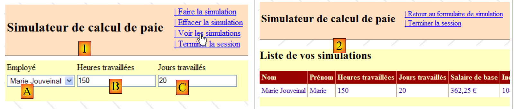

11. تطبيق [SimuPaie] – الإصدار 7 من – ASP.NET / عرض متعدد / صفحات متعددة
قراءة موصى بها: المرجع [1]، تطوير الويب باستخدام ASP.NET 1.1، القسم: أمثلة
نحن ندرس الآن إصدارًا مطابقًا وظيفيًا لتطبيق ASP.NET ثلاثي الطبقات [pam-v4-3tier-nhibernate-multivues-monopage] الذي تمت مناقشته سابقًا، لكننا نقوم بتعديل بنيته على النحو التالي: في حين أن العروض في الإصدار السابق تم تنفيذها بواسطة صفحة ASPX واحدة، فستتم هنا بواسطة ثلاث صفحات ASPX.
كانت بنية التطبيق السابق كما يلي:
 |
لدينا هنا بنية MVC (نموذج – عرض – وحدة تحكم):
- يحتوي ملف [Default.aspx.cs] على كود وحدة التحكم. وتعد صفحة [Default.aspx] نقطة الاتصال الوحيدة للعميل. وهي تتولى معالجة جميع الطلبات الواردة من العميل.
- [Saisies، Simulation، Simulations، ...] هي طرق العرض. يتم تنفيذ طرق العرض هذه هنا باستخدام مكونات [View] في صفحة [Default.aspx].
ستكون بنية الإصدار الجديد كما يلي:
 |
- تتغير طبقة [الويب] فقط
- تظل طرق العرض (ما يُعرض للمستخدم) دون تغيير.
- أصبح كود وحدة التحكم، الذي كان في الإصدار السابق موجودًا بالكامل في [Default.aspx.cs]، موزعًا الآن عبر عدة صفحات:
- [MasterPage.master]: صفحة تضم العناصر المشتركة بين العروض المختلفة: الشعار العلوي مع خيارات القائمة
- [Formulaire.aspx]: الصفحة التي تعرض نموذج المحاكاة وتدير الإجراءات التي تتم في هذا النموذج
- [Simulations.aspx]: الصفحة التي تعرض قائمة عمليات المحاكاة وتتعامل مع الإجراءات التي تحدث على هذه الصفحة
- [Errors.aspx]: الصفحة التي يتم عرضها عند حدوث خطأ في تهيئة التطبيق. لا يمكن إجراء أي إجراءات على هذه الصفحة.
يمكن اعتبار هذه بنية MVC متعددة وحدات التحكم، في حين أن بنية الإصدار السابق كانت بنية MVC ذات وحدة تحكم واحدة.
تتبع معالجة طلب العميل الخطوات التالية:
- يقوم العميل بتقديم طلب إلى التطبيق. ويقوم بذلك إلى إحدى الصفحتين [Formulaire.aspx، Simulations.aspx].
- تقوم الصفحة المطلوبة بمعالجة هذا الطلب. وللقيام بذلك، قد تحتاج إلى مساعدة من طبقة [الأعمال]، والتي قد تحتاج بدورها إلى طبقة [DAO] إذا كان من الضروري تبادل البيانات مع قاعدة البيانات. يتلقى التطبيق استجابة من طبقة [الأعمال].
- بناءً على هذا الرد، يختار (3) العرض (= الرد) لإرساله إلى العميل، ويزوده (4) بالمعلومات (النموذج) التي يحتاجها.
- يتم إرسال الرد إلى العميل (5)
11.1. طرق عرض التطبيق
فيما يلي وجهات النظر المختلفة المعروضة على المستخدم:
- - عرض [VueSaisies]، الذي يعرض نموذج المحاكاة

- - عرض [VueSimulation] المستخدم لعرض نتائج المحاكاة التفصيلية:

- - عرض [SimulationView]، الذي يسرد عمليات المحاكاة التي أجراها العميل

- - عرض [EmptySimulationsView]، الذي يشير إلى أن العميل ليس لديه محاكاة أو لم يعد لديه محاكاة:

- عرض [ErrorView]، الذي يشير إلى وجود خطأ في تهيئة التطبيق:

11.2. إنشاء طرق عرض في سياق متعدد وحدات التحكم
في الإصدار السابق، تم إنشاء جميع طرق العرض من صفحة [Default.aspx] الواحدة. احتوت هذه الصفحة على مكونين [MultiView]، وتألفت طرق العرض من مزيج من مكون [View] واحد أو اثنين ينتميان إلى هذين المكونين [MultiView].
على الرغم من فعالية هذه البنية عند وجود عدد قليل من العروض، إلا أنها تصل إلى حدودها بمجرد أن يصبح عدد المكونات التي تشكل العروض المختلفة كبيرًا: في الواقع، مع كل طلب يتم إرساله إلى الصفحة [Default.aspx] الواحدة، يتم إنشاء مثيلات لجميع مكوناتها، على الرغم من أن بعضها فقط سيُستخدم لإنشاء الاستجابة للمستخدم. وبالتالي، يتم تنفيذ عمل غير ضروري مع كل طلب جديد، مما يصبح عائقًا عندما يكون العدد الإجمالي للمكونات على الصفحة كبيرًا.
أحد الحلول هو توزيع طرق العرض على صفحات مختلفة. وهذا ما نقوم به هنا. دعونا ندرس حالتين مختلفتين لتوليد طرق العرض:
- يتم إرسال الطلب إلى الصفحة P1، وتقوم هذه الصفحة بإنشاء الاستجابة
- يتم إرسال الطلب إلى الصفحة P1، وتطلب هذه الصفحة من الصفحة P2 إنشاء الاستجابة
11.2.1. الحالة 1: صفحة وحدة تحكم/عرض
في الحالة 1، نعود إلى بنية وحدة التحكم الواحدة في الإصدار السابق، حيث تكون الصفحة [Default.aspx] هي الصفحة P1:
 |
- يقوم العميل بتوجيه طلب إلى الصفحة P1 (1)
- تقوم الصفحة P1 بمعالجة هذا الطلب. للقيام بذلك، قد تحتاج إلى مساعدة من طبقة [business] (2)، والتي قد تحتاج بدورها إلى طبقة [DAO] إذا كان من الضروري تبادل البيانات مع قاعدة البيانات. يتلقى التطبيق استجابة من طبقة [business].
- بناءً على هذا الرد، يختار (3) العرض (= الرد) لإرساله إلى العميل، ويزوده (4) بالمعلومات (النموذج) التي يحتاجها. يتضمن ذلك اختيار مكونات [Panel] أو [View] لعرضها على الصفحة P1 وتهيئة المكونات التي تحتوي عليها.
- يتم إرسال الرد إلى العميل (5)
فيما يلي مثالان مأخوذان من التطبيق قيد الدراسة:
[صفحة Formulaire.aspx]
 |
- في [1]: بعد طلب صفحة [Formulaire.aspx]، يطلب المستخدم محاكاة
- في [2]: عالجت صفحة [Formulaire.aspx] هذا الطلب وقامت بتوليد الاستجابة بنفسها من خلال عرض مكون [View] لم يتم عرضه في [1]
[الصفحة Simulations.aspx]
 |
- في [1]: بعد طلب صفحة [Simulations.aspx]، يرغب المستخدم في إزالة محاكاة
- في [2]: عالجت صفحة [Simulations.aspx] هذا الطلب وقامت بتوليد الاستجابة بنفسها من خلال إعادة عرض القائمة الجديدة للمحاكاة.
 |
11.2.2. الحالة 2: صفحة ذات وحدة تحكم واحدة، صفحة وحدة تحكم/عرض
يمكن أن تشمل الحالة 2 بنى مختلفة. سنختار ما يلي:
 |
- يقوم العميل بتوجيه طلب إلى الصفحة P1 (1)
- تقوم الصفحة P1 بمعالجة هذا الطلب. للقيام بذلك، قد تحتاج إلى مساعدة من طبقة [الأعمال] (2)، والتي قد تحتاج بدورها إلى طبقة [DAO] إذا كان من الضروري تبادل البيانات مع قاعدة البيانات. يتلقى التطبيق استجابة من طبقة [الأعمال].
- وبناءً على ذلك، يختار (3) العرض (= الرد) الذي سيتم إرساله إلى العميل من خلال تزويده (4) بالمعلومات (القالب) التي يحتاجها. في هذه الحالة، يجب إنشاء العرض المراد إنشاؤه بواسطة صفحة أخرى غير P1 — وتحديدًا الصفحة P2. لتنفيذ العمليتين (3) و(4)، تتوفر للصفحة P1 خياران:
- نقل التنفيذ إلى الصفحة P2 باستخدام العملية [Server.Transfer("P2.aspx")]. في هذه الحالة، يمكن وضع النموذج المخصص للصفحة P2 في سياق الطلب [Context.Items["key"]=value] أو في جلسة عمل المستخدم [Session.["key"]=value]. سيتم بعد ذلك إنشاء مثيل للصفحة P2، وعند معالجة حدث Load الخاص بها، على سبيل المثال، يمكنها استرداد المعلومات التي تم تمريرها من الصفحة P1 باستخدام العمليات [value=(Type)Context.Items["key"] أو [value=(Type)Session["key"], حسب الاقتضاء، حيث Type هو نوع القيمة المرتبطة بالمفتاح. يعد نقل القيم عبر Context هو الأنسب إذا لم تكن هناك حاجة للاحتفاظ بقيم النموذج لطلب عميل مستقبلي.
- اطلب من العميل إعادة التوجيه إلى الصفحة P2 باستخدام العملية [Response.Redirect("P2.aspx")]. في هذه الحالة، ستضع الصفحة P1 النموذج المخصص للصفحة P2 في الجلسة، نظرًا لأن سياق الطلب يتم مسحه في نهاية كل طلب. ومع ذلك، هنا، ستؤدي إعادة التوجيه إلى إنهاء الطلب الأول للعميل إلى P1 وتشغيل طلب ثانٍ من نفس العميل، هذه المرة إلى P2. هناك طلبان متتاليان. نحن نعلم أن الجلسة هي إحدى الطرق للحفاظ على "الذاكرة" بين الطلبات. هناك حلول أخرى إلى جانب الجلسة.
- بغض النظر عن كيفية تولي P2 زمام الأمور، نعود بعد ذلك إلى الحالة 1: تلقت P2 طلبًا ستقوم بمعالجته (5) وستقوم بتوليد الاستجابة بنفسها (6، 7). يمكننا أيضًا أن نتخيل أنه بعد معالجة الطلب، ستقوم الصفحة P2 بتسليم المهمة إلى الصفحة P3، وهكذا دواليك.
فيما يلي مثال مأخوذ من التطبيق قيد الدراسة:
 |
- في [1]: يطلب المستخدم الذي طلب صفحة [Formulaire.aspx] الاطلاع على قائمة المحاكاة
- في [2]: تعالج صفحة [Formulaire.aspx] هذا الطلب وتعيد توجيه العميل إلى صفحة [Simulations.aspx]. وهذه الأخيرة هي التي تقدم الرد للمستخدم. بدلاً من مطالبة العميل بإعادة التوجيه، كان بإمكان صفحة [Formulaire.aspx] إعادة توجيه طلب العميل إلى صفحة [Simulations.aspx]. في هذه الحالة في [2]، كنا سنرى نفس عنوان URL الموجود في [1]. في الواقع، يعرض المتصفح دائمًا آخر عنوان URL تم طلبه:
- الإجراء المطلوب في [1] مخصص لصفحة [Formulaire.aspx]. يرسل المتصفح طلب POST إلى هذه الصفحة.
- إذا قامت صفحة [Formulaire.aspx] بمعالجة الطلب ثم إعادة توجيهه عبر [Server.Transfer("Simulations.aspx")] إلى صفحة [Simulations.aspx]، فإننا نبقى ضمن نفس الطلب. سيعرض المتصفح بعد ذلك في [2] عنوان URL لـ [Formulaire.aspx] الذي تم إرسال طلب POST إليه.
- إذا قامت صفحة [Formulaire.aspx] بمعالجة الطلب ثم أعادته عبر [Response.Redirect("Simulations.aspx")] إلى صفحة [Simulations.aspx]، يقوم المتصفح عندئذٍ بإجراء طلب ثانٍ، وهو طلب GET إلى [Simulations.aspx]. ثم يعرض المتصفح في [2] عنوان URL لـ [Simulations.aspx] الذي تم إرسال طلب GET إليه. وهذا ما تظهره لنا لقطة الشاشة [2] أعلاه.
11.3. مشروع Visual Web Developer لطبقة [web]
مشروع Visual Web Developer لطبقة [web] هو كما يلي:
 |
- في [1] نجد:
- ملف تكوين التطبيق [Web.config] – وهو مطابق لملف تكوين تطبيق [pam-v4-3tier-nhibernate-multivues-monopage].
- صفحة [Default.aspx] – تقوم ببساطة بإعادة توجيه العميل إلى صفحة [Formulaire.aspx]
- صفحة [Formulaire.aspx]، التي تعرض نموذج المحاكاة للمستخدم وتتعامل مع الإجراءات المتعلقة بهذا النموذج
- صفحة [Simulations.aspx]، التي تعرض قائمة محاكاة المستخدم وتتعامل مع الإجراءات المتعلقة بهذه الصفحة
- صفحة [Errors.aspx]، التي تعرض للمستخدم صفحة تشير إلى وجود خطأ عند بدء تشغيل تطبيق الويب.
- في [2]، نرى مراجع المشروع.
لنعد إلى بنية المشروع الجديد:
 |
بالمقارنة مع مشروع [pam-v4-3tier-nhibernate-multivues-monopage]، لم تتغير سوى طرق العرض. ولهذا السبب يعيد المشروع الجديد استخدام بعض الملفات من ذلك المشروع:
- ملف التكوين [Web.config]
- ملفات DLL المشار إليها [pam-dao-nhibernate، pam-metier-dao-nhibernate، Spring.Core، NHibernate]
- فئة التطبيق العامة [Global.asax]
- المجلدات [images، resources، pam]
للحفاظ على الاتساق مع المشروع قيد التطوير حاليًا، سنحرص على أن يكون مساحة الاسم الخاصة بالطرق العرض وفئة التطبيق العامة هي [pam-v7]:
 |
11.4. كود عرض الصفحة
11.4.1. الصفحة الرئيسية [MasterPage.master]
تحتوي طرق عرض التطبيق المعروضة في القسم 11.1 على عناصر مشتركة يمكن تجميعها في صفحة رئيسية، تُعرف باسم "الصفحة الرئيسية" في Visual Studio. خذ على سبيل المثال طرق العرض [VueSaisies] و[VueSimulationsVides] أدناه، اللتين تم إنشاؤهما على التوالي بواسطة الصفحتين [Formulaire.aspx] و[Simulations.aspx]:
 |
تشترك هاتان العرضتان في الشريط العلوي (العنوان وخيارات القائمة). وينطبق هذا على جميع العروض التي سيتم عرضها للمستخدم: فستحتوي جميعها على نفس الشريط العلوي. ولتمكين صفحات مختلفة من مشاركة نفس جزء العرض، هناك حلول متنوعة، بما في ذلك ما يلي:
- ضع هذا الجزء المشترك في عنصر تحكم مستخدم. كانت هذه هي التقنية الأساسية في ASP.NET 1.1
- وضع هذا الجزء المشترك في صفحة رئيسية. تم تقديم هذه التقنية مع ASP.NET 2.0. وهذا هو ما نستخدمه هنا.
لإنشاء صفحة رئيسية في تطبيق ويب، اتبع الخطوات التالية:
- انقر بزر الماوس الأيمن على المشروع / إضافة عنصر جديد / صفحة رئيسية:
 |
تؤدي إضافة صفحة رئيسية إلى إضافة ثلاثة ملفات إلى تطبيق الويب بشكل افتراضي:
- [MasterPage.master]: كود تخطيط الصفحة الرئيسية
- [MasterPage.master.cs]: كود عناصر التحكم للصفحة الرئيسية
- [MasterPage.Master.Designer.cs]: إعلانات المكونات للصفحة الرئيسية
الرمز الذي تم إنشاؤه بواسطة Visual Studio في [MasterPage.master] هو كما يلي:
<%@ Master Language="C#" AutoEventWireup="true" CodeBehind="MasterPage.master.cs" Inherits="pam_v7.MasterPage" %>
<!DOCTYPE html PUBLIC "-//W3C//DTD XHTML 1.0 Transitional//EN" "http://www.w3.org/TR/xhtml1/DTD/xhtml1-transitional.dtd">
<html xmlns="http://www.w3.org/1999/xhtml">
<head runat="server">
<title>Untitled Page</title>
<asp:ContentPlaceHolder id="head" runat="server">
</asp:ContentPlaceHolder>
</head>
<body>
<form id="form1" runat="server">
<div>
<asp:ContentPlaceHolder id="ContentPlaceHolder1" runat="server">
</asp:ContentPlaceHolder>
</div>
</form>
</body>
</html>
- السطر 1: تُستخدم العلامة <%@ Master ... %> لتعريف الصفحة كصفحة رئيسية. سيكون كود التحكم الخاص بالصفحة موجودًا في الملف المحدد بواسطة السمة CodeBehind، وسترث الصفحة من الفئة المحددة بواسطة السمة Inherits.
- الأسطر 12-18: نموذج الصفحة الرئيسية
- الأسطر 14-16: حاوية فارغة ستحتوي، في تطبيقنا، على إحدى الصفحات [Form.aspx، Simulations.aspx، Errors.aspx]. يتلقى العميل دائمًا نفس الصفحة كاستجابة — الصفحة الرئيسية — حيث ستتلقى الحاوية [ContentPlaceHolder1] دفق HTML مقدمًا من إحدى الصفحات [Form.aspx، Simulations.aspx، Errors.aspx]. وبالتالي، لتغيير مظهر الصفحات المرسلة إلى العملاء، ما عليك سوى تغيير مظهر الصفحة الرئيسية.
- السطران 8-9: حاوية فارغة تسمح للصفحات "الفرعية" بتخصيص الرأس <head>...</head>.
يظهر التمثيل المرئي (علامة التبويب "تصميم") لهذا الكود المصدري في (1) أدناه. بالإضافة إلى ذلك، يمكنك إضافة أي عدد تريده من الحاويات باستخدام مكون [ContentPlaceHolder] (2) من شريط الأدوات [قياسي].
 |
فيما يلي كود عنصر التحكم الذي تم إنشاؤه بواسطة Visual Studio في [MasterPage.master.cs]:
using System;
public partial class MasterPage : System.Web.UI.MasterPage
{
protected void Page_Load(object sender, EventArgs e)
{
}
}
- السطر 3: الفئة المشار إليها بواسطة السمة [Inherits] للتوجيه <%@ Master ... %> في الصفحة [MasterPage.master] مشتقة من الفئة [System.Web.UI.MasterPage]
فيما سبق، نرى وجود طريقة Page_Load، التي تتعامل مع حدث Load للصفحة الرئيسية. ستحتوي الصفحة الرئيسية على صفحة أخرى بداخلها. بأي ترتيب تحدث أحداث Load للصفحتين؟ هذه قاعدة عامة: يحدث حدث Load لمكون ما قبل حدوثه في الحاوية التي تحتوي عليه. هنا، سيحدث حدث Load للصفحة المضمنة في الصفحة الرئيسية قبل حدوثه في الصفحة الرئيسية نفسها.
لإنشاء صفحة في تستخدم الصفحة السابقة [MasterPage.master] كصفحة رئيسية لها، يمكنك اتباع الخطوات التالية:
 |
- في [1]: انقر بزر الماوس الأيمن على الصفحة الرئيسية، ثم حدد [Add Content Page]
- في [2]: يتم إنشاء صفحة افتراضية، وهي في هذه الحالة [WebForm1.aspx].
في [2]: يتم إنشاء صفحة افتراضية، وهي في هذه الحالة [WebForm1.aspx].
<%@ Page Title="" Language="C#" MasterPageFile="~/MasterPage.Master" AutoEventWireup="true" CodeBehind="WebForm1.aspx.cs" Inherits="pam_v7.WebForm1" %>
<asp:Content ID="Content1" ContentPlaceHolderID="ContentPlaceHolder1" runat="server">
</asp:Content>
- السطر 1: توجيه Page وسماته
- MasterPageFile: تحدد ملف الصفحة الرئيسية للصفحة الموصوفة في التوجيه. يشير الرمز ~ إلى مجلد المشروع.
- المعلمات الأخرى هي المعلمات القياسية لصفحة ويب ASP
- السطران 2-3: يتم ربط علامات <asp:Content> واحدة تلو الأخرى بتوجيهات <asp:ContentPlaceHolder> في الصفحة الرئيسية عبر السمة ContentPlaceHolderID. سيتم وضع المكونات الموجودة بين السطرين 2-3 أعلاه، في وقت التشغيل، في الحاوية ContentPlaceHolder1 في الصفحة الرئيسية.
من خلال إعادة تسمية الصفحة [WebForm1.aspx] التي تم إنشاؤها بهذه الطريقة، يمكننا إنشاء الصفحات المختلفة باستخدام [MasterPage.master] كصفحة رئيسية.
بالنسبة لتطبيق [SimuPaie] الخاص بنا، سيكون المظهر المرئي للصفحة الرئيسية كما يلي:
 |
رقم | النوع | الاسم | الدور |
لوحة (اللون الوردي أعلاه) | رأس | رأس الصفحة | |
لوحة (باللون الأصفر أعلاه) | المحتوى | محتوى الصفحة | |
زر الارتباط | زر الارتباط تشغيل المحاكاة | يطلب حساب المحاكاة | |
زر الارتباط | LinkButtonClearSimulation | مسح نموذج الإدخال | |
زر الارتباط | LinkButtonViewSimulations | يعرض قائمة المحاكاة التي تم إجراؤها بالفعل | |
زر الارتباط | LinkButtonSimulationForm | العودة إلى نموذج الإدخال | |
زر الارتباط | LinkButtonSaveSimulation | يحفظ المحاكاة الحالية في قائمة المحاكاة | |
زر الارتباط | LinkButtonEndSession | ينهي الجلسة الحالية |
فيما يلي شفرة المصدر المقابلة:
<%@ Master Language="C#" AutoEventWireup="true" CodeBehind="MasterPage.master.cs" Inherits="pam_v7.MasterPage" %>
<!DOCTYPE html PUBLIC "-//W3C//DTD XHTML 1.0 Transitional//EN" "http://www.w3.org/TR/xhtml1/DTD/xhtml1-transitional.dtd">
<html xmlns="http://www.w3.org/1999/xhtml">
<head id="Head1" runat="server">
<title>Application PAM</title>
</head>
<body background="ressources/standard.jpg">
<form id="form1" runat="server">
<asp:ScriptManager ID="ScriptManager1" runat="server" EnablePartialRendering="true" />
<asp:UpdatePanel runat="server" ID="UpdatePanelPam" UpdateMode="Conditional">
<ContentTemplate>
<asp:Panel ID="entete" runat="server" BackColor="#FFE0C0">
<table>
<tr>
<td>
<h2>
Simulateur de calcul de paie</h2>
</td>
<td>
<label>
 </label>
<asp:UpdateProgress ID="UpdateProgress1" runat="server">
<ProgressTemplate>
<img alt="" src="images/indicator.gif" />
<asp:Label ID="Label5" runat="server" BackColor="#FF8000"
EnableViewState="False" Text="Calcul en cours. Patientez ....">
</asp:Label>
</ProgressTemplate>
</asp:UpdateProgress>
</td>
<td>
<asp:LinkButton ID="LinkButtonFaireSimulation" runat="server"
CausesValidation="False">| Faire la simulation<br />
</asp:LinkButton>
<asp:LinkButton ID="LinkButtonEffacerSimulation" runat="server"
CausesValidation="False">| Effacer la simulation<br />
</asp:LinkButton>
<asp:LinkButton ID="LinkButtonVoirSimulations" runat="server"
CausesValidation="False">| Voir les simulations<br />
</asp:LinkButton>
<asp:LinkButton ID="LinkButtonFormulaireSimulation" runat="server"
CausesValidation="False">| Retour au formulaire de simulation<br />
</asp:LinkButton>
<asp:LinkButton ID="LinkButtonEnregistrerSimulation" runat="server"
CausesValidation="False">| Enregistrer la simulation<br />
</asp:LinkButton>
<asp:LinkButton ID="LinkButtonTerminerSession" runat="server"
CausesValidation="False">| Terminer la session<br />
</asp:LinkButton>
</td>
</tr>
</table>
<hr />
</asp:Panel>
<div>
<asp:Panel ID="contenu" runat="server" BackColor="#FFFFC0">
<asp:ContentPlaceHolder ID="ContentPlaceHolder1" runat="server">
</asp:ContentPlaceHolder>
</asp:Panel>
</div>
</ContentTemplate>
</asp:UpdatePanel>
</form>
</body>
</html>
- السطر 1: لاحظ اسم فئة الصفحة الرئيسية: MasterPage
- السطر 8: حدد صورة خلفية للصفحة.
- الأسطر 9–64: النموذج
- السطر 10: مكون ScriptManager المطلوب لتأثيرات Ajax
- الأسطر 11-63: حاوية AJAX
- الأسطر 12–62: المحتوى الذي يدعم Ajax
- الأسطر 13–55: مكون Panel [رأس الصفحة]
- الأسطر 57-60: مكون Panel [المحتوى]
- السطور 58–59: مكون [ContentPlaceHolder1]، الذي سيحتوي على الصفحة المُغلفة [Formulaire.aspx، Simulations.aspx، Erreurs.aspx]
لبناء هذه الصفحة، يمكننا إدراج كود ASPX الخاص بعرض [HeaderView] من صفحة [Default.aspx] الخاصة بإصدار [pam-v4-3tier-nhibernate-multivues-monopage]، الموصوف في القسم 8.5.2، في لوحة [header].
11.4.2. صفحة [Formulaire.aspx]
لإنشاء هذه الصفحة، اتبع الطريقة الموضحة في القسم 11.4.1 وأعد تسمية الصفحة [WebForm1.aspx] التي تم إنشاؤها إلى [Form.aspx]. سيكون المظهر المرئي لصفحة [Form.aspx] قيد الإنشاء كما يلي:
 |
يتكون المظهر المرئي لصفحة [Formulaire.aspx] من عنصرين:
- [1] الصفحة الرئيسية مع حاوية [ContentPlaceHolder1] (2)
- [2] المكونات الموضوعة في الحاوية [ContentPlaceHolder1]. وهذه المكونات مطابقة لتلك الموجودة في التطبيق السابق.
فيما يلي شفرة المصدر لهذه الصفحة:
<%@ Page Language="C#" MasterPageFile="~/MasterPage.master" AutoEventWireup="true"
CodeBehind="Formulaire.aspx.cs" Inherits="pam_v7.PageFormulaire" Title="Simulation de calcul de paie : formulaire" %>
<%@ MasterType VirtualPath="~/MasterPage.master" %>
<asp:Content ID="Content1" ContentPlaceHolderID="ContentPlaceHolder1" runat="Server">
<div>
<table>
<tr>
<td>
Employé
</td>
<td>
Heures travaillées
</td>
<td>
Jours travaillés
</td>
<td>
</td>
</tr>
...
</asp:Content>
- السطر 1: توجيه Page مع سمة MasterPageFile
- السطر 4: يمكن لفئة عنصر التحكم في الصفحة الرئيسية عرض الحقول والخصائص العامة. يمكن الوصول إلى هذه الحقول والخصائص من خلال الصفحات المُغلفة باستخدام صيغة Master.[field] أو Master.[property]. تشير الخاصية Master للصفحة إلى الصفحة الرئيسية كمثيل من النوع [System.Web.UI.MasterPage]. لذلك، في مثالنا، يجب أن نكتب فعليًا (MasterPage)(Master).[field] أو (MasterPage)(Master).[property]. يمكن تجنب هذا التحويل النوعي عن طريق إدراج توجيه MasterType من السطر 4 في الصفحة. تحدد السمة VirtualPath لهذا التوجيه ملف الصفحة الرئيسية. يمكن للمترجم بعد ذلك التعرف على الحقول العامة والخصائص والأساليب التي تعرضها فئة الصفحة الرئيسية، في هذه الحالة من النوع [MasterPage].
- الأسطر 5-22: المحتوى المراد إدراجه في حاوية [ContentPlaceHolder1] للصفحة الرئيسية.
يمكن إنشاء هذه الصفحة عن طريق تعيين محتواها (الأسطر 6-21) إلى محتوى عرض [VueSaisies] الموصوف في القسم 8.5.3 ومحتوى عرض [VueSimulation] الموصوف في القسم 8.5.4.
11.4.3. الصفحة [Simulations.aspx]
لإنشاء هذه الصفحة، اتبع الطريقة الموضحة في القسم 11.4.1 وأعد تسمية الصفحة [WebForm1.aspx] الناتجة إلى [Simulations.aspx]. المظهر المرئي لصفحة [Simulations.aspx] قيد الإنشاء حاليًا هو كما يلي:
 |
يتكون المظهر المرئي لصفحة [Simulations.aspx] من عنصرين:
- [1] الصفحة الرئيسية مع حاوية [ContentPlaceHolder1] الخاصة بها
- في [2] المكونات الموضوعة في حاوية [ContentPlaceHolder1]. وهي مطابقة لتلك الموجودة في التطبيق السابق.
فيما يلي شفرة المصدر لهذه الصفحة:
<%@ Page Language="C#" MasterPageFile="~/MasterPage.master" AutoEventWireup="true"
CodeBehind="Simulations.aspx.cs" Inherits="pam_v7.PageSimulations" Title="Pam : liste des simulations" %>
<%@ MasterType VirtualPath="~/MasterPage.master" %>
<asp:Content ID="Content1" ContentPlaceHolderID="ContentPlaceHolder1" runat="Server">
<asp:MultiView ID="MultiView1" runat="server">
<asp:View ID="View1" runat="server">
<h2>
Liste de vos simulations</h2>
<p>
<asp:GridView ID="GridViewSimulations" runat="server" ...>
...
</asp:GridView>
</p>
</asp:View>
<asp:View ID="View2" runat="server">
<h2>
La liste de vos simulations est vide</h2>
</asp:View>
</asp:MultiView><br />
</asp:Content>
يمكننا إنشاء هذه الصفحة عن طريق تعيين محتواها (الأسطر 5–21) إلى محتوى عرض [VueSimulations] الموصوف في القسم 8.5.5 ومحتوى عرض [VueSimulationsVides] الموصوف في القسم 8.5.6.
11.4.4. صفحة [Errors.aspx]
لإنشاء هذه الصفحة، اتبع الطريقة الموضحة في القسم 11.4.1 وأعد تسمية الصفحة [WebForm1.aspx] الناتجة إلى [Errors.aspx]. المظهر المرئي لصفحة [Errors.aspx] قيد الإنشاء حاليًا هو كما يلي:
 |
يتكون المظهر المرئي لصفحة [Errors.aspx] من عنصرين:
- [1] الصفحة الرئيسية مع حاوية [ContentPlaceHolder1]
- [2] المكونات الموضوعة في حاوية [ContentPlaceHolder1]. وهذه المكونات مطابقة لتلك الموجودة في التطبيق السابق.
فيما يلي شفرة المصدر لهذه الصفحة:
<%@ Page Language="C#" MasterPageFile="~/MasterPage.master" AutoEventWireup="true"
CodeBehind="Erreurs.aspx.cs" Inherits="pam_v7.PageErreurs" Title="Pam : erreurs" %>
<%@ MasterType VirtualPath="~/MasterPage.master" %>
<asp:Content ID="Content1" ContentPlaceHolderID="ContentPlaceHolder1" Runat="Server">
<h3>Les erreurs suivantes se sont produites au démarrage de l'application</h3>
<ul>
<asp:Repeater id="rptErreurs" runat="server">
<ItemTemplate>
<li>
<%# Container.DataItem %>
</li>
</ItemTemplate>
</asp:Repeater>
</ul>
</asp:Content>
11.5. رمز عنصر التحكم في الصفحة
11.5.1. نظرة عامة
لنعد إلى بنية التطبيق:
 |
- [Global] هو كائن [HttpApplication] الذي يقوم بتهيئة (الخطوة 0) التطبيق. هذه الفئة مطابقة لتلك الموجودة في الإصدار السابق.
- أصبح كود وحدة التحكم، الذي كان موجودًا بالكامل في [Default.aspx.cs] في الإصدار السابق، موزعًا الآن على عدة صفحات:
- [MasterPage.master]: الصفحة الرئيسية لـ [Form.aspx، Simulations.aspx، Errors.aspx]. تحتوي على القائمة.
- [Formulaire.aspx]: الصفحة التي تعرض نموذج المحاكاة وتتعامل مع الإجراءات التي يتم تنفيذها على هذا النموذج
- [Simulations.aspx]: الصفحة التي تعرض قائمة المحاكاة وتتعامل مع الإجراءات التي تحدث على هذه الصفحة
- [Errors.aspx]: الصفحة التي يتم عرضها عند حدوث خطأ في تهيئة التطبيق. لا يمكن تنفيذ أي إجراءات على هذه الصفحة.
تتبع معالجة طلب العميل الخطوات التالية:
- يقوم العميل بتقديم طلب إلى التطبيق. وعادةً ما يقوم بذلك على إحدى الصفحتين [Form.aspx، Simulations.aspx]، ولكن لا شيء يمنعه من طلب الصفحة [Errors.aspx]. يجب أخذ هذا السيناريو في الاعتبار.
- تقوم الصفحة المطلوبة بمعالجة هذا الطلب (الخطوة 1). للقيام بذلك، قد تحتاج إلى مساعدة من طبقة [الأعمال] (الخطوة 2)، والتي قد تحتاج بدورها إلى طبقة [DAO] إذا كان من الضروري تبادل البيانات مع قاعدة البيانات. يتلقى التطبيق استجابة من طبقة [الأعمال].
- بناءً على ذلك، تختار (الخطوة 3) العرض (= الرد) لإرساله إلى العميل وتزوده (الخطوة 4) بالمعلومات (النموذج) التي يحتاجها. لقد رأينا ثلاث احتمالات لتوليد هذا الرد:
- الصفحة المطلوبة (D) هي أيضًا الصفحة (R) المرسلة كاستجابة. يتكون بناء نموذج الاستجابة (R) إذن من تعيين قيم معينة لمكونات معينة من الصفحة (D) التي يجب أن تكون موجودة في الاستجابة.
- الصفحة المطلوبة (D) ليست هي الصفحة (R) المرسلة كاستجابة. يمكن للصفحة (D) عندئذٍ:
- نقل تدفق التنفيذ إلى الصفحة (R) باستخدام عبارة Server.Transfer(" R "). يمكن بعد ذلك وضع النموذج في السياق باستخدام Context.Items("key")=value أو، بشكل أقل شيوعًا، في الجلسة باستخدام Session.Items("key")=value
- إعادة توجيه العميل إلى الصفحة (R) باستخدام العبارة Response.redirect(" R "). يمكن بعد ذلك وضع النموذج في الجلسة ولكن ليس في السياق.
- يتم إرسال الاستجابة إلى العميل (الخطوة 5)
ستستجيب كل صفحة من الصفحات [MasterPage.master، Form.aspx، Simulations.aspx، Errors.aspx] لواحد أو أكثر من الأحداث التالية:
- Init: الحدث الأول في دورة حياة الصفحة
- Load: يحدث عند تحميل الصفحة
- Click: النقر على أحد الروابط في قائمة الصفحة الرئيسية
نقوم بمعالجة الصفحات واحدة تلو الأخرى، بدءًا من الصفحة الرئيسية.
11.5.2. رمز التحكم لصفحة [MasterPage.master]
11.5.2.1. هيكل الفئة
يحتوي كود عنصر التحكم في الصفحة الرئيسية على الهيكل التالي:
using System.Web.UI.WebControls;
namespace pam_v7
{
public partial class MasterPage : System.Web.UI.MasterPage
{
// the menu
public LinkButton OptionFaireSimulation
{
get { return LinkButtonFaireSimulation; }
}
...
// set menu
public void SetMenu(bool boolFaireSimulation, bool boolEnregistrerSimulation, bool boolEffacerSimulation, bool boolFormulaireSimulation, bool boolVoirSimulations, bool boolTerminerSession)
{
....
}
// managing the [End session] option
protected void LinkButtonTerminerSession_Click(object sender, System.EventArgs e)
{
....
}
// init master page
protected void Page_Init(object sender, System.EventArgs e)
{
....
}
}
}
}
- السطر 5: اسم الفئة هو [MasterPage] وهي مشتقة من فئة النظام [System.Web.UI.MasterPage].
- الأسطر 9-14: يتم عرض خيارات القائمة الستة كخصائص عامة للفئة
- الأسطر 16-19: تسمح الطريقة العامة SetMenu للصفحات [Formulaire.aspx، Simulations.aspx، Erreurs.aspx] بتعيين قائمة الصفحة الرئيسية
- الأسطر 22–25: الإجراء الذي يتعامل مع النقر على رابط [LinkButtonTerminerSession]
- الأسطر 28–31: الإجراء الذي يتعامل مع حدث Init للصفحة الرئيسية
11.5.2.2. الخصائص العامة للفئة
using System.Web.UI.WebControls;
namespace pam_v7
{
public partial class MasterPage : System.Web.UI.MasterPage
{
// the menu
public LinkButton OptionFaireSimulation
{
get { return LinkButtonFaireSimulation; }
}
public LinkButton OptionEffacerSimulation
{
get { return LinkButtonEffacerSimulation; }
}
public LinkButton OptionEnregistrerSimulation
{
get { return LinkButtonEnregistrerSimulation; }
}
public LinkButton OptionVoirSimulations
{
get { return LinkButtonVoirSimulations; }
}
public LinkButton OptionTerminerSession
{
get { return LinkButtonTerminerSession; }
}
public LinkButton OptionFormulaireSimulation
{
get { return LinkButtonFormulaireSimulation; }
}
...
}
}
لفهم هذا الكود، عليك أن تتذكر المكونات التي تشكل الصفحة الرئيسية:
 |
رقم | النوع | الاسم | الدور |
لوحة (اللون الوردي أعلاه) | رأس | رأس الصفحة | |
لوحة (باللون الأصفر أعلاه) | المحتوى | محتوى الصفحة | |
زر الارتباط | زر الارتباط تشغيل المحاكاة | طلب حساب المحاكاة | |
زر الارتباط | زر الارتباط مسح المحاكاة | مسح نموذج الإدخال | |
زر الارتباط | LinkButtonViewSimulations | يعرض قائمة المحاكاة التي تم إجراؤها بالفعل | |
زر الارتباط | LinkButtonSimulationForm | العودة إلى نموذج الإدخال | |
زر الارتباط | LinkButtonSaveSimulation | يحفظ المحاكاة الحالية في قائمة المحاكاة | |
زر الارتباط | LinkButtonEndSession | ينهي الجلسة الحالية |
لا يمكن الوصول إلى المكونات من 1 إلى 6 خارج الصفحة التي تحتوي عليها. تهدف الخصائص الموجودة في الأسطر من 9 إلى 37 إلى إتاحة الوصول إليها للفئات الخارجية، وفي هذه الحالة فئات الصفحات الأخرى للتطبيق.
11.5.2.3. طريقة SetMenu
تسمح طريقة SetMenu العامة للصفحات [Formulaire.aspx، Simulations.aspx، Erreurs.aspx] بتعيين قائمة الصفحة الرئيسية. ورمزها بسيط:
// fixer le menu
public void SetMenu(bool boolFaireSimulation, bool boolEnregistrerSimulation, bool boolEffacerSimulation, bool boolFormulaireSimulation, bool boolVoirSimulations, bool boolTerminerSession)
{
// on fixe les options de menu
LinkButtonFaireSimulation.Visible = boolFaireSimulation;
LinkButtonEnregistrerSimulation.Visible = boolEnregistrerSimulation;
LinkButtonEffacerSimulation.Visible = boolEffacerSimulation;
LinkButtonVoirSimulations.Visible = boolVoirSimulations;
LinkButtonFormulaireSimulation.Visible = boolFormulaireSimulation;
LinkButtonTerminerSession.Visible = boolTerminerSession;
}
11.5.2.4. معالجة الأحداث في الصفحة الرئيسية
ستعالج الصفحة الرئيسية حدثين:
- حدث Init، وهو الحدث الأول في دورة حياة الصفحة
- حدث Click على الرابط [LinkButtonTerminerSession]
تحتوي الصفحة الرئيسية على خمسة روابط أخرى: [LinkButtonRunSimulation، LinkButtonSaveSimulation، LinkButtonClearSimulation، LinkButtonViewSimulations، LinkButtonSimulationForm]. على سبيل المثال، دعونا ندرس ما يجب القيام به عند النقر على الرابط [LinkButtonRunSimulation]:
- التحقق من البيانات التي تم إدخالها (الساعات، الأيام) في صفحة [Form.aspx]
- حساب الراتب
- عرض النتائج على صفحة [Form.aspx]
تتطلب الخطوتان 1 و 3 الوصول إلى المكونات الموجودة في صفحة [Form.aspx]. وهذا ليس هو الحال. في الواقع، لا تعرف الصفحة الرئيسية شيئًا عن المكونات الموجودة في الصفحات التي قد يتم إدراجها في حاوية [ContentPlaceHolder1] الخاصة بها. في مثالنا، يعود الأمر إلى صفحة [Formulaire.aspx] لمعالجة النقر على رابط [LinkButtonFaireSimulation]، لأنها هي الصفحة التي يتم عرضها عند حدوث هذا الحدث. كيف يمكن إخطارها بهذا الحدث؟
- نظرًا لأن الرابط [LinkButtonFaireSimulation] ليس جزءًا من صفحة [Formulaire.aspx]، لا يمكننا كتابة الإجراء المعتاد في [Formulaire.aspx]:
private void LinkButtonFaireSimulation_Click(object sender, System.EventArgs e)
{
...
}
يمكنك التغلب على المشكلة باستخدام الكود التالي في [Formulaire.aspx]:
using System.Collections.Generic;
...
namespace pam_v7
{
public partial class Formulaire : System.Web.UI.Page
{
// page loading
protected void Page_Load(object sender, System.EventArgs e)
{
// event manager
Master.OptionFaireSimulation.Click += OptFaireSimulation_Click;
Master.OptionEffacerSimulation.Click += OptEffacerSimulation_Click;
Master.OptionVoirSimulations.Click += OptVoirSimulations_Click;
Master.OptionEnregistrerSimulation.Click += OptEnregistrerSimulation_Click;
...
}
// payroll calculation
private void OptFaireSimulation_Click(object sender, System.EventArgs e)
{
....
}
// delete simulation
private void OptEffacerSimulation_Click(object sender, System.EventArgs e)
{
...
}
protected void OptVoirSimulations_Click(object sender, System.EventArgs e)
{
...
}
protected void OptEnregistrerSimulation_Click(object sender, System.EventArgs e)
{
...
}
}
}
- الأسطر 12–15: عند حدوث حدث Load لصفحة [Formulaire.aspx]، يتم إنشاء مثيل لفئة [MasterPage] الخاصة بالصفحة الرئيسية. يمكن الوصول إلى خصائصها العامة Optionxx وهي من النوع LinkButton، وهو مكون يدعم حدث Click. نربط الطرق التالية بأحداث Click هذه:
- OptFaireSimulation_Click لحدث Click على رابط LinkButtonFaireSimulation
- OptEffacerSimulation_Click لحدث Click على رابط LinkButtonEffacerSimulation
- OptVoirSimulations_Click لحدث Click على رابط LinkButtonVoirSimulations
- OptEnregistrerSimulation_Click لحدث النقر على رابط LinkButtonEnregistrerSimulation
سيتم توزيع معالجة أحداث النقر على روابط القائمة الستة على النحو التالي:
- ستتولى صفحة [Formulaire.aspx] معالجة الروابط [LinkButtonRunSimulation، LinkButtonSaveSimulation، LinkButtonClearSimulation، LinkButtonViewSimulations]
- ستتعامل الصفحة [Simulations.aspx] مع رابط [LinkButtonSimulationForm]
- ستتولى الصفحة الرئيسية [MasterPage.master] معالجة رابط [LinkButtonEndSession]. بالنسبة لهذا الحدث، لا تحتاج إلى معرفة الصفحة التي تغلفها.
11.5.2.5. حدث Init للصفحة الرئيسية
تستخدم الصفحات الثلاث [Form.aspx، Simulations.aspx، Errors.aspx] للتطبيق [MasterPage.master] كصفحة رئيسية لها. لنسمي الصفحة الرئيسية M والصفحة المُغلفة E. عندما يطلب العميل الصفحة E، تحدث الأحداث التالية بالترتيب:
- E.Init
- M.Init
- E.Load
- M.Load
- ...
سنستخدم حدث Init للصفحة M لتنفيذ التعليمات البرمجية التي يجب تشغيلها في أقرب وقت ممكن، بغض النظر عن الصفحة المستهدفة E. لتحديد هذه التعليمات البرمجية، دعونا نراجع نظرة عامة على التطبيق:
 |
في الأعلى، [Global] هو كائن [HttpApplication] الذي يقوم بتهيئة التطبيق. هذه الفئة هي نفسها الموجودة في إصدار [pam-v4-3tier-nhibernate-multivues-monopage]:
using System;
...
namespace pam_v7
{
public class Global : System.Web.HttpApplication
{
// --- static application data ---
public static Employe[] Employes;
public static IPamMetier PamMetier = null;
public static string Msg;
public static bool Erreur = false;
// application startup
public void Application_Start(object sender, EventArgs e)
{
...
}
public void Session_Start(object sender, EventArgs e)
{
...
}
}
}
إذا فشلت فئة [Global] في تهيئة التطبيق بشكل صحيح، فإنها تحدد متغيرين عامين ثابتين:
- يتم تعيين المتغير المنطقي Error في السطر 12 إلى true
- المتغير `Msg` في السطر 11 يحتوي على رسالة توفر تفاصيل حول الخطأ الذي حدث
عندما يطلب المستخدم إحدى الصفحات [Form.aspx، Simulations.aspx] في الوقت الذي لم يتم فيه تهيئة التطبيق بشكل صحيح، يجب إعادة توجيه هذا الطلب إلى صفحة [Errors.aspx]، التي ستعرض رسالة الخطأ من الفئة [Global]. وهناك عدة طرق للتعامل مع هذه الحالة:
- إجراء فحص خطأ التهيئة في معالج الأحداث Init أو Load لكل من الصفحتين [Formulaire.aspx، Simulations.aspx]
- إجراء فحص خطأ التهيئة في معالج الأحداث Init أو Load للصفحة الرئيسية لهاتين الصفحتين. تتميز هذه الطريقة بوضع فحص خطأ التهيئة في مكان واحد.
نختار إجراء فحص أخطاء التهيئة في معالج الأحداث Init للصفحة الرئيسية:
protected void Page_Init(object sender, System.EventArgs e)
{
// event manager
LinkButtonTerminerSession.Click += LinkButtonTerminerSession_Click;
// initialization errors?
if (Global.Erreur)
{
// is the encapsulated page the error page?
bool isPageErreurs =...;
// if the error page is displayed, leave it alone, otherwise redirect the client to the error page
if (!isPageErreurs)
Response.Redirect("Erreurs.aspx");
return;
}
}
سيتم تنفيذ الكود أعلاه بمجرد طلب إحدى الصفحات [Form.aspx، Simulations.aspx، Errors.aspx]. إذا كانت الصفحة المطلوبة هي [Form.aspx] أو [Simulations.aspx]، فإننا ببساطة (السطر 12) نعيد توجيه العميل إلى صفحة [Errors.aspx]، التي تعرض رسالة الخطأ من فئة [Global]. إذا كانت الصفحة المطلوبة هي [Errors.aspx]، فلا يجب أن تحدث عملية إعادة التوجيه هذه: يجب عرض صفحة [Errors.aspx]. لذلك، نحتاج إلى معرفة الصفحة التي تغلفها الصفحة الرئيسية، ضمن طريقة [Page_Init] الخاصة بها.
دعونا نراجع شجرة مكونات الصفحة الرئيسية:
...
<body background="ressources/standard.jpg">
<form id="form1" runat="server">
<asp:Panel ID="entete" runat="server" BackColor="#FFE0C0" Width="1239px" >
...
</asp:Panel>
<div>
<asp:Panel ID="contenu" runat="server" BackColor="#FFFFC0">
<asp:ContentPlaceHolder ID="ContentPlaceHolder1" runat="server">
</asp:ContentPlaceHolder>
</asp:Panel>
</div>
</form>
</body>
</html>
- الأسطر 1-13: الحاوية التي تحمل المعرف "form1"
- الأسطر 4-6: الحاوية التي تحمل المعرف "entete"، والمضمنة في الحاوية التي تحمل المعرف "form1"
- الأسطر 8-11: الحاوية التي تحمل المعرف "content"، والمضمنة في الحاوية التي تحمل المعرف "form1"
- السطور 9-10: الحاوية التي تحمل المعرف "ContentPlaceHolder1"، والمضمنة في الحاوية التي تحمل المعرف "content"
توجد الصفحة E المضمنة في الصفحة الرئيسية M داخل الحاوية التي تحمل المعرف "ContentPlaceHolder1". للإشارة إلى مكون يحمل المعرف C في هذه الصفحة E، نكتب:
this.FindControl("form1").FindControl("contenu").FindControl("ContentPlaceHolder1").FindControl("C");
شجرة المكونات لصفحة [Errors.aspx] هي كما يلي:
<%@ Page Language="C#" MasterPageFile="~/MasterPage.master" AutoEventWireup="true"
CodeBehind="Erreurs.aspx.cs" Inherits="pam_v7.PageErreurs" Title="Pam : erreurs" %>
<%@ MasterType VirtualPath="~/MasterPage.master" %>
<asp:Content ID="Content1" ContentPlaceHolderID="ContentPlaceHolder1" Runat="Server">
<h3>Les erreurs suivantes se sont produites au démarrage de l'application</h3>
<ul>
<asp:Repeater id="rptErreurs" runat="server">
<ItemTemplate>
<li>
<%# Container.DataItem %>
</li>
</ItemTemplate>
</asp:Repeater>
</ul>
</asp:Content>
عند دمج الصفحة [Errors.aspx] مع الصفحة الرئيسية M، يتم دمج محتوى العلامة <asp:Content> أعلاه (الأسطر 5–16) في العلامة <asp:ContentPlaceHolder> التي تحمل المعرف "ContentPlaceholder1" في الصفحة M، مما ينتج عنه شجرة المكونات التالية:
- السطر 12: يمكن استخدام المكون [rptErrors] لتحديد ما إذا كانت الصفحة الرئيسية M تحتوي على الصفحة [Errors.aspx] أم لا. هذا المكون موجود فقط في هذه الصفحة.
هذه التفسيرات كافية لفهم كود الإجراء [Page_Init] في الصفحة الرئيسية:
protected void Page_Init(object sender, System.EventArgs e)
{
// event manager
LinkButtonTerminerSession.Click += LinkButtonTerminerSession_Click;
// initialization errors?
if (Global.Erreur)
{
// is the encapsulated page the error page?
bool isPageErreurs = this.FindControl("form1").FindControl("contenu").FindControl("ContentPlaceHolder1").FindControl("rptErreurs") != null;
// if the error page is displayed, leave it alone, otherwise redirect the client to the error page
if (!isPageErreurs)
Response.Redirect("Erreurs.aspx");
return;
}
}
- السطر 4: نربط معالج أحداث بحدث النقر (Click) على رابط LinkButtonTerminerSession. يوجد هذا المعالج في فئة MasterPage.
- السطر 6: نتحقق مما إذا كانت فئة [Global] قد قامت بتعيين قيمة منطقية لـ Error
- السطر 9: إذا كان الأمر كذلك، فإن المتغير المنطقي IsPageErrors يشير إلى ما إذا كانت الصفحة المُغلفة في الصفحة الرئيسية هي صفحة [Errors.aspx]
- السطر 12: إذا لم تكن الصفحة المُغلفة في الصفحة الرئيسية هي صفحة [Errors.aspx]، يتم إعادة توجيه العميل إلى تلك الصفحة؛ وإلا، لا يتم فعل أي شيء.
11.5.2.6. حدث Click على الرابط [LinkButtonTerminerSession]
 |
عندما ينقر المستخدم على رابط [End Session] في العرض (1) أعلاه، يجب مسح محتويات الجلسة وعرض نموذج فارغ (2).
يمكن أن يكون كود معالج هذا الحدث كما يلي:
protected void LinkButtonTerminerSession_Click(object sender, System.EventArgs e)
{
// quit session
Session.Abandon();
// the [form] view is displayed
Response.Redirect("Formulaire.aspx");
}
- السطر 4: يتم إنهاء الجلسة الحالية
- السطر 6: يتم إعادة توجيه العميل إلى صفحة [Form.aspx]
يمكننا أن نلاحظ أن هذا الكود لا يتضمن أيًا من مكونات صفحات [Form.aspx، Simulations.aspx، Errors.aspx]. وبالتالي، يمكن معالجة الحدث بواسطة الصفحة الرئيسية نفسها.
11.5.3. رمز التحكم لصفحة [Errors.aspx]
يمكن أن يكون كود التحكم لصفحة [Errors.aspx] كما يلي:
using System.Collections.Generic;
namespace pam_v7
{
public partial class Erreurs : System.Web.UI.Page
{
protected void Page_Load(object sender, System.EventArgs e)
{
// initialization errors?
if (Global.Erreur)
{
// prepare the template for the [errors] page
List<string> erreursInitialisation = new List<string>();
erreursInitialisation.Add(Global.Msg);
// associate the error list with its component
rptErreurs.DataSource = erreursInitialisation;
rptErreurs.DataBind();
}
// set the menu
Master.SetMenu(false, false, false, false, false, false);
}
}
}
تذكر أن الصفحة [Errors.aspx] تخدم الغرض الوحيد المتمثل في عرض خطأ تهيئة التطبيق عند حدوثه:
- السطر 10: نتحقق مما إذا كانت عملية التهيئة قد انتهت بخطأ
- السطران 13-14: إذا كان الأمر كذلك، يتم وضع رسالة الخطأ (Global.Msg) في قائمة [InitializationErrors]
- السطران 16-17: يتم توجيه مكون [rptErrors] لعرض هذه القائمة
- السطر 20: في جميع الحالات (سواء حدث خطأ أم لا)، لا يتم عرض خيارات قائمة الصفحة الرئيسية، وبالتالي لا يمكن للمستخدم بدء أي إجراءات جديدة من هذه الصفحة.
ماذا يحدث إذا طلب المستخدم صفحة [Errors.aspx] مباشرةً (وهو ما لا يُفترض به فعله أثناء الاستخدام العادي للتطبيق)؟ من خلال فحص الكود في [MasterPage.master.cs] و[Errors.aspx.cs]، سنلاحظ ما يلي:
- إذا كان هناك خطأ في التهيئة، فسيتم عرضه
- إذا لم يكن هناك خطأ في التهيئة، يتلقى المستخدم صفحة تحتوي فقط على الرأس من [MasterPage.master] دون عرض خيارات القائمة.
11.5.4. كود التحكم لصفحة [Formulaire.aspx]
11.5.4.1. هيكل الفئة
يمكن أن يكون الهيكل الأساسي لرمز عنصر التحكم الخاص بصفحة [Form.aspx] كما يلي:
using Pam.Metier.Entites;
...
partial class PageFormulaire : System.Web.UI.Page
{
// page loading
protected void Page_Load(object sender, System.EventArgs e)
{
// event manager
Master.OptionFaireSimulation.Click += OptFaireSimulation_Click;
Master.OptionEffacerSimulation.Click += OptEffacerSimulation_Click;
Master.OptionVoirSimulations.Click += OptVoirSimulations_Click;
Master.OptionEnregistrerSimulation.Click += OptEnregistrerSimulation_Click;
....
}
// payroll calculation
private void OptFaireSimulation_Click(object sender, System.EventArgs e)
{
....
}
// delete simulation
private void OptEffacerSimulation_Click(object sender, System.EventArgs e)
{
...
}
protected void OptVoirSimulations_Click(object sender, System.EventArgs e)
{
....
}
protected void OptEnregistrerSimulation_Click(object sender, System.EventArgs e)
{
...
}
}
يتعامل رمز التحكم الخاص بصفحة [Formulaire.aspx] مع خمسة أحداث:
- حدث Load للصفحة
- حدث النقر على الرابط [LinkButtonRunSimulation] في الصفحة الرئيسية
- حدث النقر على الرابط [LinkButtonClearSimulation] في الصفحة الرئيسية
- حدث النقر على الرابط [LinkButtonEnregistrerSimulation] في الصفحة الرئيسية
- حدث النقر على الرابط [LinkButtonViewSimulations] في الصفحة الرئيسية
11.5.4.2. حدث تحميل الصفحة
يمكن أن يكون الهيكل الأساسي لمعالج حدث تحميل الصفحة كما يلي:
protected void Page_Load(object sender, System.EventArgs e)
{
// event manager
Master.OptionFaireSimulation.Click += OptFaireSimulation_Click;
Master.OptionEffacerSimulation.Click += OptEffacerSimulation_Click;
Master.OptionVoirSimulations.Click += OptVoirSimulations_Click;
Master.OptionEnregistrerSimulation.Click += OptEnregistrerSimulation_Click;
// view [entries] display
...
// menu positioning master page
...
// query processing GET
if (!IsPostBack)
{
// loading employee names into the combo
...
// init view [entries] with entries stored in the session if they exist
....
}
}
قد يكون المثال التالي توضيحًا للتعليق الموجود في السطر 17:
 |
 |
- في [1]، نطلب الاطلاع على قائمة عمليات المحاكاة. وقد تم إدخال البيانات في [A، B، C].
- في [2]، نرى القائمة
- في [3]، نطلب العودة إلى النموذج
- في [4]، يتم عرض النموذج تمامًا كما تم تركه. نظرًا لوجود طلبين، (1،2) و(3،4)، فهذا يعني أن:
- عند الانتقال من [1] إلى [2]، تم حفظ الإدخالات من [1]
- عند الانتقال من [3] إلى [4]، تمت استعادتها. إن إجراء [Page_Load] في [Form.aspx] هو الذي يقوم بهذه الاستعادة.
سؤال: أكمل إجراء Page_Load باستخدام التعليقات والرمز من إصدار [pam-v4-3tier-nhibernate-multivues-monopage]
11.5.4.3. معالجة أحداث النقر على روابط القائمة
فيما يلي الهيكل الأساسي لمعالجات أحداث النقر للروابط الموجودة في الصفحة الرئيسية:
// payroll calculation
private void OptFaireSimulation_Click(object sender, System.EventArgs e)
{
// ajax effect
Thread.Sleep(3000);
// valid page?
Page.Validate();
if (!Page.IsValid)
{
// view display [input]
...
}
// the page is validated - inputs are retrieved
...
// we calculate the employee's salary
FeuilleSalaire feuillesalaire;
try
{
feuillesalaire = ...;
}
catch (PamException ex)
{
// we encountered a problem
...
return;
}
// put the result in the session
Session["simulation"] = ...;
// put the entries in the session
...
// display
...
// views display
...
// display menu MasterPage
...
}
// delete simulation
private void OptEffacerSimulation_Click(object sender, System.EventArgs e)
{
// display panel [input]
...
// selection 1st employee
...
}
protected void OptVoirSimulations_Click(object sender, System.EventArgs e)
{
// put the entries in the session
...
// the [simulations] view is displayed
Response.Redirect("simulations.aspx");
}
protected void OptEnregistrerSimulation_Click(object sender, System.EventArgs e)
{
// save the current simulation in the user's session
...
// the [simulations] view is displayed
Response.Redirect("simulations.aspx");
}
السؤال: أكمل الكود الخاص بالإجراءات المذكورة أعلاه باستخدام التعليقات والكود من إصدار [pam-v4-3tier-nhibernate-multivues-monopage]
11.5.5. كود التحكم لصفحة [Simulations.aspx]
يمكن أن يكون الهيكل الأساسي لرمز التحكم الخاص بصفحة [Simulations.aspx] كما يلي:
using System.Collections.Generic;
using Pam.Web;
using System.Web.UI.WebControls;
partial class PageSimulations : System.Web.UI.Page
{
// simulations
private List<Simulation> simulations;
// page loading
protected void Page_Load(object sender, System.EventArgs e)
{
// event manager
Master.OptionFormulaireSimulation.Click += OptFormulaireSimulation_Click;
GridViewSimulations.RowDeleting += GridViewSimulations_RowDeleting;
// simulations are retrieved from the
simulations = ...;
// are there any simulations?
if (simulations.Count != 0)
{
// first view visible
...
// fill the gridview
...
}
else
{
// second view
...
}
// set the menu
...
}
protected void GridViewSimulations_RowDeleting(object sender, System.Web.UI.WebControls.GridViewDeleteEventArgs e)
{
// simulations are retrieved from the
List<Simulation> simulations = ...;
// delete the designated simulation (e.RowIndex represents the number of the deleted line in the gridview)
..
// are there any simulations left?
if (simulations.Count != 0)
{
// fill the gridview
...
}
else
{
// view [SimulationsVides]
...
}
}
protected void OptFormulaireSimulation_Click(object sender, System.EventArgs e)
{
// the [form] view is displayed
Response.Redirect("formulaire.aspx");
}
}
السؤال: أكمل الكود الخاص بالإجراءات المذكورة أعلاه باستخدام التعليقات والكود من إصدار [pam-v4-3tier-nhibernate-multivues-monopage]
11.5.6. كود التحكم لصفحة [Default.aspx]
يمكنك تضمين صفحة [Default.aspx] في التطبيق للسماح للمستخدم بطلب عنوان URL للتطبيق دون تحديد صفحة، كما هو موضح أدناه:
 |
تلقى الطلب [1] الصفحة [Formulaire.aspx] (2) كاستجابة. نعلم أن الطلب (1) تتم معالجته افتراضيًا بواسطة صفحة [Default.aspx] الخاصة بالتطبيق. للحصول على (2)، تحتاج [Default.aspx] ببساطة إلى إعادة توجيه العميل إلى الصفحة [Formulaire.aspx]. يمكن تحقيق ذلك باستخدام الكود التالي:
partial class _Default : System.Web.UI.Page
{
protected void Page_Init(object sender, System.EventArgs e)
{
// redirects to the input form
Response.Redirect("Formulaire.aspx");
}
}
تحتوي صفحة العرض [Default.aspx] فقط على التوجيه الذي يربطها بـ [Default.aspx.cs]:
<%@ Page Language="C#" AutoEventWireup="true"
CodeBehind="Default.aspx.cs" Inherits="pam_v7._Default" Title="Untitled Page" %>